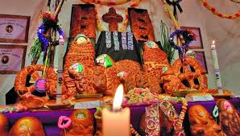

Todos Santos nació en Europa como un día para honrar a los santos y mártires,
fusionándose con tradiciones paganas como el Samhain celta.
Origen Mundial
Con la llegada de los españoles, Todos Santos se adaptó a culturas indígenas,
incorporando altares, alimentos y rituales propios de cada región.
Expansión a América

En Bolivia, la festividad mezcla la tradición católica con costumbres indígenas.
Se preparan altares, se visitan cementerios y se ofrecen alimentos típicos como mondongo,
t’antawawas y rosquetes.